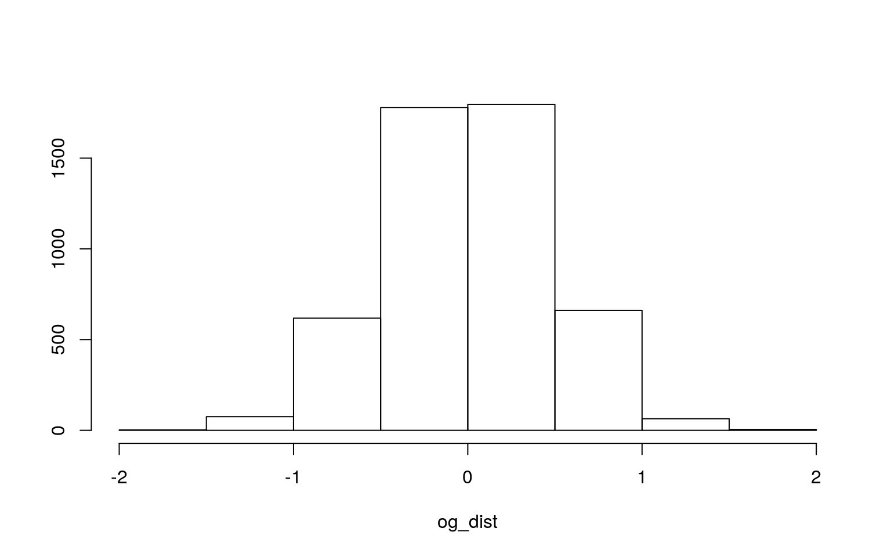
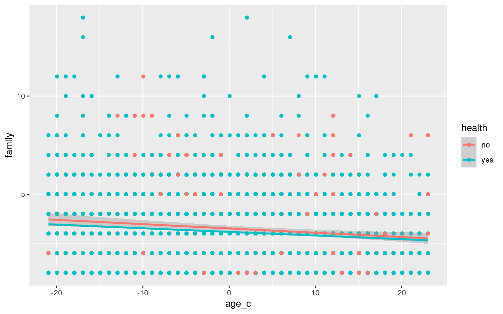
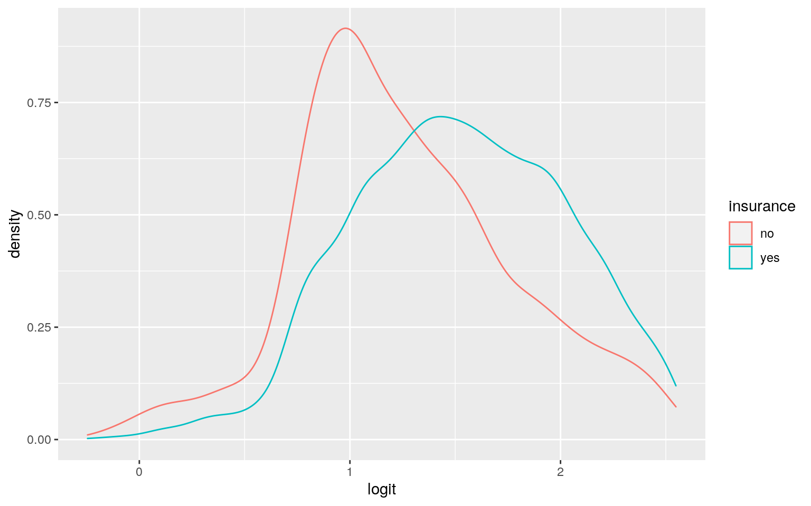
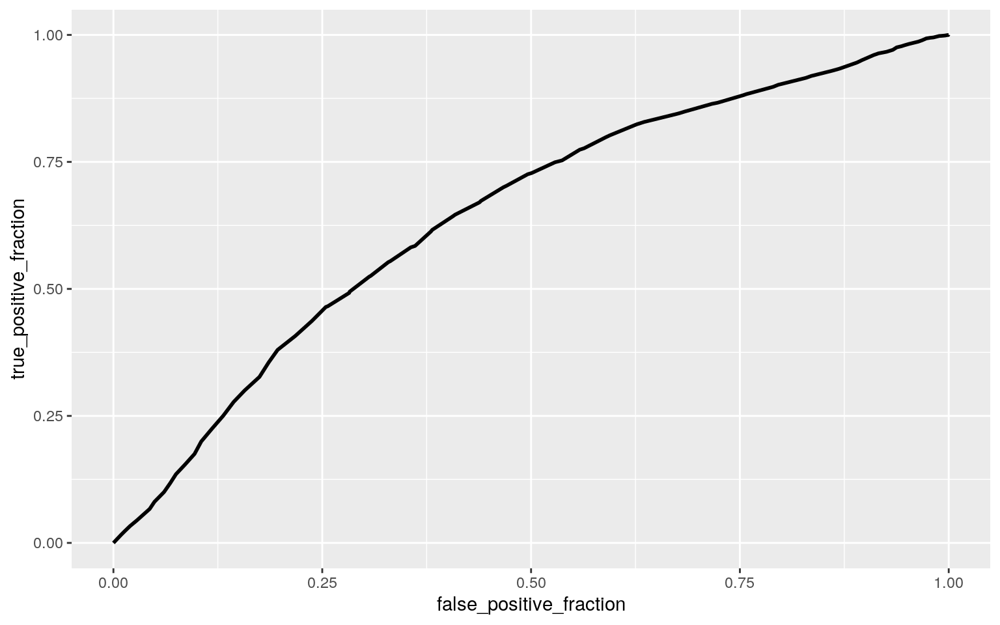

I have chosen the dataset “HealthInsurance” which looks at the Medical Expenditure Panel Survey data from 1996. It has 8,802 rows and 11 columns. The variables which are pretty self explanatory are age, gender, insurance, marriage status, self-employed, family size, region, ethnicity, and education. Two variables which require interpretation are 1) health (self-reported binary status of healthy or not), and 2) limit (is there any limitation on this person). Two of the variables (age and family) are numerical; the rest are categorical.
#install.packages("AER")
library(AER)
data("HealthInsurance")
glimpse(HealthInsurance)## Rows: 8,802
## Columns: 11
## $ health <fct> yes, yes, yes, yes, yes, yes, no, yes,
yes, yes, yes, yes, yes, yes, yes, yes, …
## $ age <dbl> 31, 31, 54, 27, 39, 32, 56, 60, 62, 52, 50,
44, 26, 38, 48, 48, 53, 50, 23, 43,…
## $ limit <fct> no, no, no, no, no, no, yes, no, no, no,
no, no, no, yes, no, no, no, no, no, n…
## $ gender <fct> male, female, male, male, male, female,
female, female, male, female, male, mal…
## $ insurance <fct> yes, yes, yes, yes, yes, no, yes, yes,
yes, no, yes, yes, no, no, yes, yes, no,…
## $ married <fct> yes, yes, yes, no, yes, no, yes, yes,
yes, yes, yes, no, yes, yes, yes, yes, ye…
## $ selfemp <fct> yes, no, no, no, no, no, no, no, no, no,
no, no, yes, no, no, no, yes, no, no, …
## $ family <dbl> 4, 4, 5, 5, 5, 3, 2, 2, 2, 2, 2, 1, 3, 7,
8, 8, 2, 2, 1, 2, 4, 1, 3, 6, 6, 2, 3…
## $ region <fct> south, south, west, west, west, south,
west, south, south, northeast, northeast…
## $ ethnicity <fct> cauc, cauc, cauc, cauc, cauc, afam,
cauc, cauc, cauc, afam, afam, cauc, cauc, c…
## $ education <fct> bachelor, highschool, ged, highschool,
none, bachelor, highschool, highschool, …In relation to health, the overall summary of the MANOVA test shows significance. Specifically (based on univariate ANOVA summary), for the age variable, the MANOVA test shows significance; this is not true of the family variable. There is a 18.5% chance of a Type-I error. Using the Bonferroni correction, there is no change in significance of the variables. In total, 4 tests were run: the MANOVA test, the univariate ANOVA test, and the two pairwise t-tests with one p-value per test. Some MANOVA assumptions, such as the number and independence of variables, are likely met by this data; the rest of the assumptions may not be.
manov <- manova(cbind(age,family)~health, data=HealthInsurance)
summary(manov)## Df Pillai approx F num Df den Df Pr(>F)
## health 1 0.0060107 26.604 2 8799 3.026e-12 ***
## Residuals 8800
## ---
## Signif. codes: 0 '***' 0.001 '**' 0.01 '*' 0.05 '.' 0.1
' ' 1summary.aov(manov)## Response age :
## Df Sum Sq Mean Sq F value Pr(>F)
## health 1 5701 5701.0 46.418 1.018e-11 ***
## Residuals 8800 1080786 122.8
## ---
## Signif. codes: 0 '***' 0.001 '**' 0.01 '*' 0.05 '.' 0.1
' ' 1
##
## Response family :
## Df Sum Sq Mean Sq F value Pr(>F)
## health 1 6.8 6.8362 2.811 0.09366 .
## Residuals 8800 21401.2 2.4320
## ---
## Signif. codes: 0 '***' 0.001 '**' 0.01 '*' 0.05 '.' 0.1
' ' 1pairwise.t.test(HealthInsurance$age, HealthInsurance$health, p.adj="none")##
## Pairwise comparisons using t tests with pooled SD
##
## data: HealthInsurance$age and HealthInsurance$health
##
## no
## yes 1e-11
##
## P value adjustment method: nonepairwise.t.test(HealthInsurance$family, HealthInsurance$health, p.adj="none")##
## Pairwise comparisons using t tests with pooled SD
##
## data: HealthInsurance$family and HealthInsurance$health
##
## no
## yes 0.094
##
## P value adjustment method: none1-.95^4 #probability of at least 1 typeI error## [1] 0.1854938.05/4 #bonferroni adjusted signif level## [1] 0.0125The null hypothesis for this test is that there is no mean age difference between the two health response groups “yes” or “no”. The alternative hypothesis is that there is a mean age difference between the two health response groups. Based on the randomization test and the two-tailed p-value of 0, we can reject the null hypothesis. The plot does not show vertical lines with the p-values becaues they are so far out from what the randomization test results were.
set.seed(348)
og_dist<-vector()
for(i in 1:5000) {
new <- data.frame(age=sample(HealthInsurance$age), health=HealthInsurance$health)
og_dist[i]<-mean(new[new$health=="no",]$age)-
mean(new[new$health=="yes",]$age)
}
HealthInsurance %>% group_by(health) %>%
summarize(means=mean(age)) %>% summarize(`mean_diff`=diff(means))## # A tibble: 1 x 1
## mean_diff
## <dbl>
## 1 -3.12mean(og_dist>3.1243 | og_dist<(-3.1243))## [1] 0hist(og_dist, main="",ylab=""); abline(v = c(-3.1243, 3.1243), col="blue")
Based on the coefficients, it appears that the predicted family size for average age and health is 3.26 people. For people with average age, they are expected to have .02 less people in their family. For people that self-report as healthy, family size is .176 less. There is not a significant interaction between mean age and health. According to the r-squared value reported, 1.8% of variation can be explained by the model.
Using bptest, it appears that assumptions are met. The recomputed regression results with robust standard error does not appear to change much at all from the original model.
HealthInsurance %>% mutate(age_c= age - mean(age,na.rm=T)) -> HealthInsurance
linreg <- lm(family~age_c*health, data=HealthInsurance)
summary(linreg)##
## Call:
## lm(formula = family ~ age_c * health, data =
HealthInsurance)
##
## Residuals:
## Min 1Q Median 3Q Max
## -2.7148 -1.0805 -0.1544 0.9380 10.9565
##
## Coefficients:
## Estimate Std. Error t value Pr(>|t|)
## (Intercept) 3.257343 0.063679 51.153 < 2e-16 ***
## age_c -0.021849 0.005520 -3.958 7.61e-05 ***
## healthyes -0.175701 0.065935 -2.665 0.00772 **
## age_c:healthyes 0.003360 0.005732 0.586 0.55779
## ---
## Signif. codes: 0 '***' 0.001 '**' 0.01 '*' 0.05 '.' 0.1
' ' 1
##
## Residual standard error: 1.546 on 8798 degrees of
freedom
## Multiple R-squared: 0.01807, Adjusted R-squared: 0.01774
## F-statistic: 53.98 on 3 and 8798 DF, p-value: < 2.2e-16HealthInsurance %>% select(family, age_c, health) %>% na.omit %>%
ggplot(aes(age_c, family, color=health)) + geom_point() + geom_smooth(method="lm") 
library(lmtest)
library(sandwich)
bptest(linreg)##
## studentized Breusch-Pagan test
##
## data: linreg
## BP = 85.277, df = 3, p-value < 2.2e-16coeftest(linreg, vcov=vcovHC(linreg))##
## t test of coefficients:
##
## Estimate Std. Error t value Pr(>|t|)
## (Intercept) 3.2573429 0.0742867 43.8483 < 2.2e-16 ***
## age_c -0.0218491 0.0061832 -3.5336 0.000412 ***
## healthyes -0.1757007 0.0761797 -2.3064 0.021112 *
## age_c:healthyes 0.0033597 0.0063671 0.5277 0.597739
## ---
## Signif. codes: 0 '***' 0.001 '**' 0.01 '*' 0.05 '.' 0.1
' ' 1Based on the results, it appears that the bootstrapped SEs did not change much from the original and robust SEs from the previous section.
set.seed(348)
data.frame(HealthInsurance$health, HealthInsurance$family, HealthInsurance$age_c) -> dat
samp_distn<-replicate(5000, {
boot_dat<-dat[sample(nrow(dat),replace=TRUE),]
fit<-lm(HealthInsurance.family~HealthInsurance.age_c*HealthInsurance.health, data=boot_dat)
coef(fit)
})
samp_distn%>%t%>%as.data.frame%>%summarize_all(sd)## (Intercept) HealthInsurance.age_c
HealthInsurance.healthyes
## 1 0.07355641 0.00615432 0.07545626
## HealthInsurance.age_c:HealthInsurance.healthyes
## 1 0.006333101Based on the logistic regression coefficients, people of the mean age are slightly more likely to have insurance than others. People who are self-employed are much less likely to have insurance compared to those who are not. The AUC of this model is not very high (.65); the accuracy, csensitivity, and precision are quite high, but the specificity is very low.
The AUC calculated from the ROCplot matches the AUC of the model.
glm(insurance~age_c+selfemp, data=HealthInsurance, family="binomial") -> logreg
summary(logreg)##
## Call:
## glm(formula = insurance ~ age_c + selfemp, family =
"binomial",
## data = HealthInsurance)
##
## Deviance Residuals:
## Min 1Q Median 3Q Max
## -2.2906 0.4375 0.5751 0.7073 1.2835
##
## Coefficients:
## Estimate Std. Error z value Pr(>|z|)
## (Intercept) 1.588299 0.031450 50.50 <2e-16 ***
## age_c 0.041616 0.002622 15.87 <2e-16 ***
## selfempyes -0.962934 0.075913 -12.69 <2e-16 ***
## ---
## Signif. codes: 0 '***' 0.001 '**' 0.01 '*' 0.05 '.' 0.1
' ' 1
##
## (Dispersion parameter for binomial family taken to be 1)
##
## Null deviance: 8780.2 on 8801 degrees of freedom
## Residual deviance: 8425.9 on 8799 degrees of freedom
## AIC: 8431.9
##
## Number of Fisher Scoring iterations: 4predict(logreg, type="response") -> prob
class_diag(prob, HealthInsurance$insurance)## acc sens spec ppv auc
## yes 0.8011815 0.998582 0.005714286 0.8018675 0.6468509table(predict=as.numeric(prob>.5),truth=HealthInsurance$insurance)%>%addmargins## truth
## predict no yes Sum
## 0 10 10 20
## 1 1740 7042 8782
## Sum 1750 7052 8802HealthInsurance$logit<-predict(logreg,type="link")
HealthInsurance %>% ggplot()+geom_density(aes(logit, color=insurance))
library(plotROC)
HealthInsurance<-HealthInsurance%>%mutate(prob=predict(logreg, type="response"), prediction=ifelse(prob>.5,1,0))
classify<-HealthInsurance%>%transmute(prob,prediction,truth=insurance)
ROCplot<-ggplot(classify)+geom_roc(aes(d=truth,m=prob), n.cuts=0)
ROCplot
calc_auc(ROCplot)## PANEL group AUC
## 1 1 -1 0.6468509For the original model, AUC is pretty good (.76), and all other statistics are high except specificity(.17).
For the 10-fold CV, the statistics do not change very much at all (less than .01 difference for any statistic).
After the LASSO, all variables were retained except the “limit” variable and the African American ethnicity. After performing the 10-fold CV on the LASSOed variables, the statistics still remained pretty much the same.
HealthInsurance %>% select(-logit, -age_c, -prob, -prediction) ->HealthInsurance
glm(insurance~., data=HealthInsurance, family="binomial") -> bigfit
summary(bigfit)##
## Call:
## glm(formula = insurance ~ ., family = "binomial", data =
HealthInsurance)
##
## Deviance Residuals:
## Min 1Q Median 3Q Max
## -2.7700 0.2943 0.4504 0.6527 1.9644
##
## Coefficients:
## Estimate Std. Error z value Pr(>|z|)
## (Intercept) -1.095320 0.235193 -4.657 3.21e-06 ***
## healthyes 0.253845 0.106294 2.388 0.01693 *
## age 0.026630 0.002942 9.052 < 2e-16 ***
## limityes -0.011348 0.088029 -0.129 0.89743
## gendermale -0.277993 0.059321 -4.686 2.78e-06 ***
## marriedyes 0.943202 0.066890 14.101 < 2e-16 ***
## selfempyes -1.188702 0.082634 -14.385 < 2e-16 ***
## family -0.093673 0.018798 -4.983 6.25e-07 ***
## regionmidwest 0.144834 0.097501 1.485 0.13742
## regionsouth -0.265283 0.085278 -3.111 0.00187 **
## regionwest -0.266148 0.091336 -2.914 0.00357 **
## ethnicityafam 0.136602 0.158640 0.861 0.38919
## ethnicitycauc 0.329924 0.139073 2.372 0.01768 *
## educationged 0.691946 0.135881 5.092 3.54e-07 ***
## educationhighschool 1.311222 0.077775 16.859 < 2e-16 ***
## educationbachelor 1.863050 0.108429 17.182 < 2e-16 ***
## educationmaster 2.277773 0.195345 11.660 < 2e-16 ***
## educationphd 2.559291 0.377606 6.778 1.22e-11 ***
## educationother 1.588562 0.136499 11.638 < 2e-16 ***
## ---
## Signif. codes: 0 '***' 0.001 '**' 0.01 '*' 0.05 '.' 0.1
' ' 1
##
## (Dispersion parameter for binomial family taken to be 1)
##
## Null deviance: 8780.2 on 8801 degrees of freedom
## Residual deviance: 7517.8 on 8783 degrees of freedom
## AIC: 7555.8
##
## Number of Fisher Scoring iterations: 5predict(bigfit, type="response") -> prob
class_diag(prob, HealthInsurance$insurance)## acc sens spec ppv auc
## yes 0.8108384 0.9686614 0.1748571 0.8254985 0.7597576table(predict=as.numeric(prob>.5),truth=HealthInsurance$insurance)%>%addmargins## truth
## predict no yes Sum
## 0 306 221 527
## 1 1444 6831 8275
## Sum 1750 7052 8802set.seed(1234)
k=10
data1<- HealthInsurance[sample(nrow(HealthInsurance)),]
folds<-cut(seq(1:nrow(HealthInsurance)),breaks=k,labels=F)
diags<-NULL
for(i in 1:k){
train<-data1[folds!=i,]
test<-data1[folds==i,]
truth<-test$insurance
fit<- glm(insurance~., data=train, family="binomial")
probs<- predict(fit, newdata=test, type="response")
diags<-rbind(diags,class_diag(probs,truth))
}
summarize_all(diags,mean)## acc sens spec ppv auc
## 1 0.8110643 0.9685118 0.1761821 0.8257788 0.7570391library(glmnet)
set.seed(1234)
y<-as.matrix(HealthInsurance$insurance)
x<-model.matrix(insurance~.,data=HealthInsurance)[,-1]
cv<-cv.glmnet(x,y,family="binomial")
lasso<-glmnet(x,y,family="binomial",lambda=cv$lambda.1se)
coef(lasso)## 19 x 1 sparse Matrix of class "dgCMatrix"
## s0
## (Intercept) -0.38972445
## healthyes 0.17780922
## age 0.02181584
## limityes .
## gendermale -0.19510985
## marriedyes 0.82135722
## selfempyes -0.94123635
## family -0.08555414
## regionmidwest 0.18562821
## regionsouth -0.08059066
## regionwest -0.11135293
## ethnicityafam .
## ethnicitycauc 0.10189636
## educationged 0.09713364
## educationhighschool 0.83525743
## educationbachelor 1.29054423
## educationmaster 1.47659352
## educationphd 1.34919480
## educationother 0.97473162lasso_dat <- HealthInsurance %>% mutate(health= ifelse(health=="yes", 1, 0)) %>% mutate(gender=ifelse(gender=="male", 1,0)) %>% mutate(married= ifelse(married=="yes", 1, 0)) %>% mutate(selfemp= ifelse(selfemp=="yes", 1, 0)) %>% mutate(ethnicity= ifelse(ethnicity=="cauc", 1, 0)) %>% select(-limit)
set.seed(1234)
k=10
data1<-lasso_dat[sample(nrow(lasso_dat)),]
folds<-cut(seq(1:nrow(lasso_dat)),breaks=k,labels=F)
diags<-NULL
for(i in 1:k){
train<-data1[folds!=i,]
test<-data1[folds==i,]
truth<-test$insurance
fit<- glm(insurance~., data=train, family="binomial")
probs<- predict(fit, newdata=test, type="response")
diags<-rbind(diags,class_diag(probs,truth))
}
summarize_all(diags,mean)## acc sens spec ppv auc
## 1 0.81061 0.9683693 0.1744866 0.8254572 0.7571229